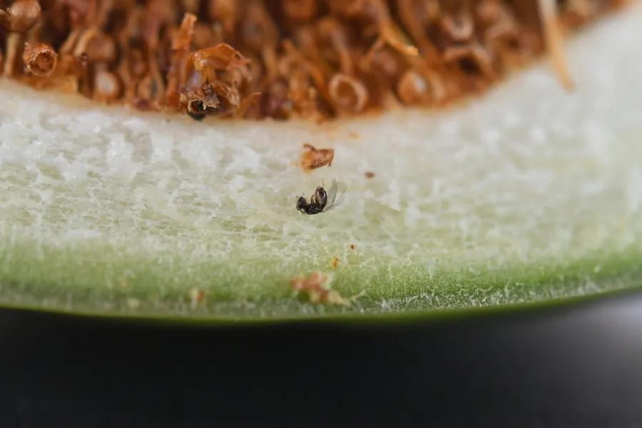

昆虫 · 动物界
榕小蜂 Wiebesia pumilae

体长仅一至二毫米的榕树传粉蜂，雌蜂钻进薜荔隐头花序内产卵并授粉，与榕树形成专性共生。
- 分类
- 门节肢动物门纲昆虫纲目膜翅目科榕小蜂科属榕小蜂属
- 栖息环境
- 薜荔等榕属植物的隐头花序内及附近的攀援灌丛
- 地理分布
- 中国长江以南及日本，随薜荔分布
- 保护级别
- 无专门保护级别；依赖特定榕树，生境破碎化威胁大
物种志
榕小蜂的雌蜂体长约一至二毫米，体黑褐色，翅膜质，产卵管细长。雄蜂无翅，体色浅，终生留在榕果内。雌蜂从隐头花序顶端的孔口钻入，钻的过程中翅膀和触角常被挤断，进入果腔后先为花序里的雌花授粉，再把卵产进部分子房，随后死在果内。
它分布于中国长江以南以及日本，专一地对应薜荔这一种榕属植物。榕果为它提供育幼场所，它为榕果完成传粉，两者谁也离不开谁，是专性互利共生的经典例子。雄蜂在果内羽化，与尚未出果的雌蜂交配后死去，受精的雌蜂携带花粉飞出，寻找新的榕果。由于依赖特定的榕树和传粉蜂，任何一方的消失都会导致另一方无法繁殖，这类共生关系对生境破碎化极为敏感。
形态与习性
- 体长雌蜂约一至二毫米
- 雌雄差异雄蜂无翅，终生留在榕果内
- 入果从孔口钻入，常挤断翅与触角
- 共生为榕果授粉，榕果供其育幼
- 交配雄蜂在果内与雌蜂交配后死去
- 专一性一种榕小蜂对应一种榕树
趣味知识
- 它钻进榕果时会把翅膀挤断，进去之后就再也飞不出来，一生只有一次飞行。
- 榕果里面那些看不见的花，全靠它带进去的花粉才能结籽。
- 一种榕树往往只认一种榕小蜂，缺了对方，两边都断子绝孙。